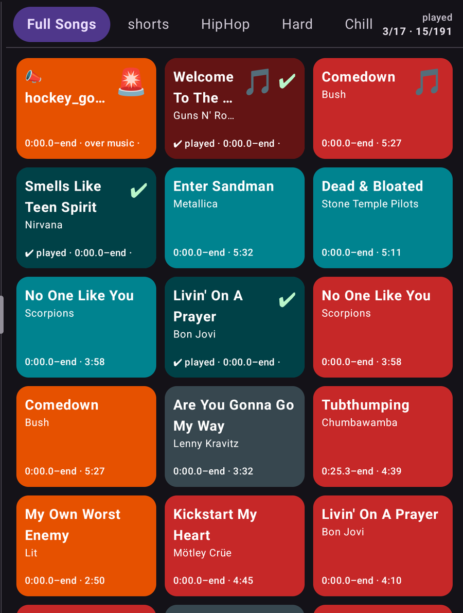
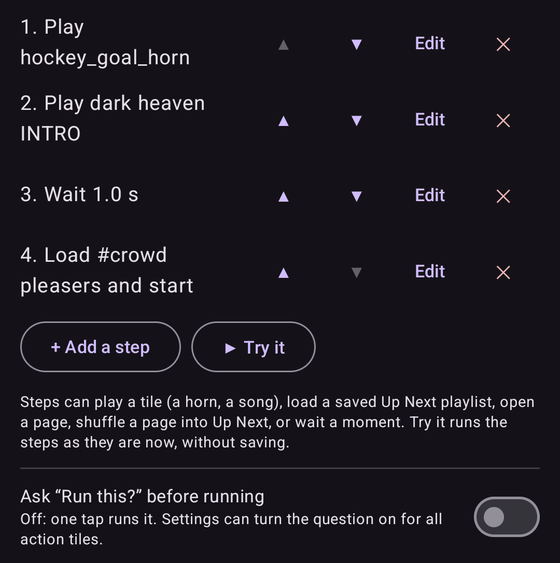
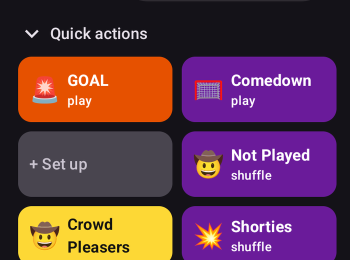

Help test Sideline Soundboard
Sideline Soundboard is an Android app for running the sound at youth games. I'm testing it with real users before it goes on Google Play, and I need testers. It takes about two minutes to sign up, and after that you just use it.
What the app does
You build a board of big tiles, one per goal song, horn, warm-up track or announcement, and tap them during the game. Songs play from YouTube and YouTube Music, or from audio files on your phone.
- Tiles and pages. Organize songs and horns into tabs such as Warm-up, Goals and Penalties. Import a whole YouTube Music playlist in one step.
- Horns and effects. Sound effects play on top of the music and start instantly. FADE and STOP are always one tap away.
- CUE and GO. Line up the next songs in Up Next, then start the one you want when the moment comes.
- Announcements. Type "Now in goal, number thirty!" and the phone's voice says it over the music, which dips while it speaks.
- Action tiles. One tap can play a horn, wait a moment, then start a playlist.
- Folding phones and tablets. The board uses the extra room, and a small video mode keeps more tiles on a single screen.



Why join
Google requires a closed test with a group of real testers before a new app can be released publicly, so you are what gets it out the door. You also get to use it early and tell me what is confusing, missing or broken. The app is made for coaches, parents and volunteers who run the music at games, and your feedback decides what gets fixed first.
What you need
- An Android phone or tablet running Android 8 or newer.
- A Google account. The address must be the one signed in to the Play Store on that device.
- About two weeks of having the app installed. Try it at a game or practice if you can.
How to join
- Email me your Google account address. Use the button above. I add you to the tester list; that can take a day or so.
- Open the link I send back. It is Google's opt-in page. Tap to become a tester.
- Install from Google Play. The opt-in page has an install link, and the app appears in the Play Store like any other.
- Use it, and tell me what you find. Reply to the same email with anything that broke, confused you or you wish it did. Short notes are fine.
Questions
What do you do with my email? I use it only to add you to the test and to reply to you. I don't share it or add you to any list. See the Privacy Policy for what the app itself does.
Does it cost anything? No. Playing songs is free in the app. A one-time Pro purchase unlocks extras such as custom colors and quick action buttons, and I'll tell you what is unlocked during the test.
iPhone? Not at this time. It is Android only.
Can I leave? Yes, any time. Uninstall it, or tell me and I'll remove you.
Questions before you sign up? sidelinesoundboard@gmail.com